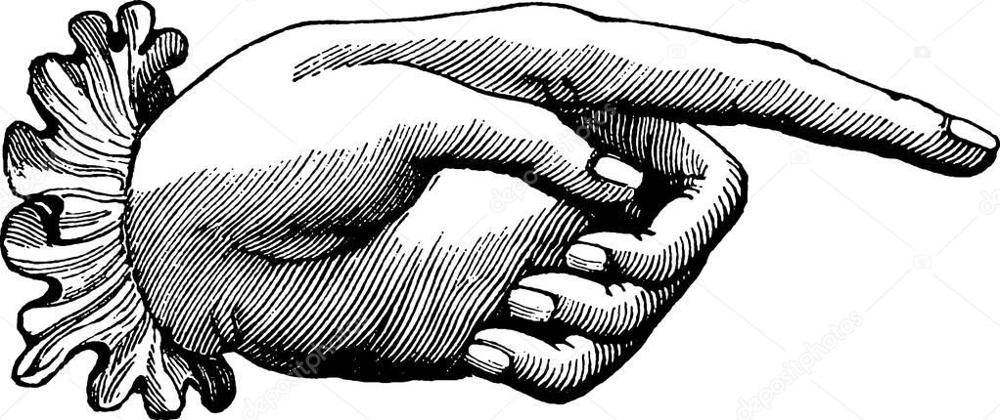

Mere magt
til adelen!
Da adelskap i utgangspunktet er tilknyttet den kongelige hirden, innebærer følgelig opptak i hirden en stor risiko for at falle i kamp. Skattefritak, Immunitet, og rett til å bære våpen for etterkommerne, er følgelig en rimelig belønning for hirdmennenes etterkommere, men ikke nok. Adelen skal have mere magt nu!
Højere skatter
Flere korstog
Mindre pest
Flere søndage
Mærkesager
Formue
Religion
Underholdning
Militær
Kultur
Magtfordeling
Utenrikspolitik
Forsvarspolitik

Henrettelser
Kronen

Magi
Jakt
Personer
Vores politiske relasjonene er preget av personlige og gjensidige
bånd i en sterk hierarkisk samfunnsorden. Finn informasjon om
Middelalderpartiets valgte og ansatte i partiet her.
Grev William
Politisk ordfører
Lord
Rolfe
Utenriksordfører
Orm Ivarsson
Militærordfører
Gudolf av Ski
Kirkeordfører
Inge Krokrygg
Kulturordfører
Jon Eilivsson
Likestillingsordfører
Bigida Bonde
Landbrugsordfører
Om os
Vi tror på to hovedkomponenter i vores samfund – en personlig og en tinglig. En fri mann har undergitt seg en herre i et gjensidig forpliktende troskapsforhold og blitt herrens mann. Vi vil forme både statsmaktenes organer, politisk ideologi og lovgivning. De halvfrie bøndene må utføre pliktarbeid og betale leieavgifter og på alle økonomiske områder må godsherren være dominerende. Vi tror på monopol på all nødvendig teknologi, slik at bonden mot avgifter kan male på herrens mølle, pløye med herrens okse og sage på herrens sag.
Bilder fra årets generalforsamling